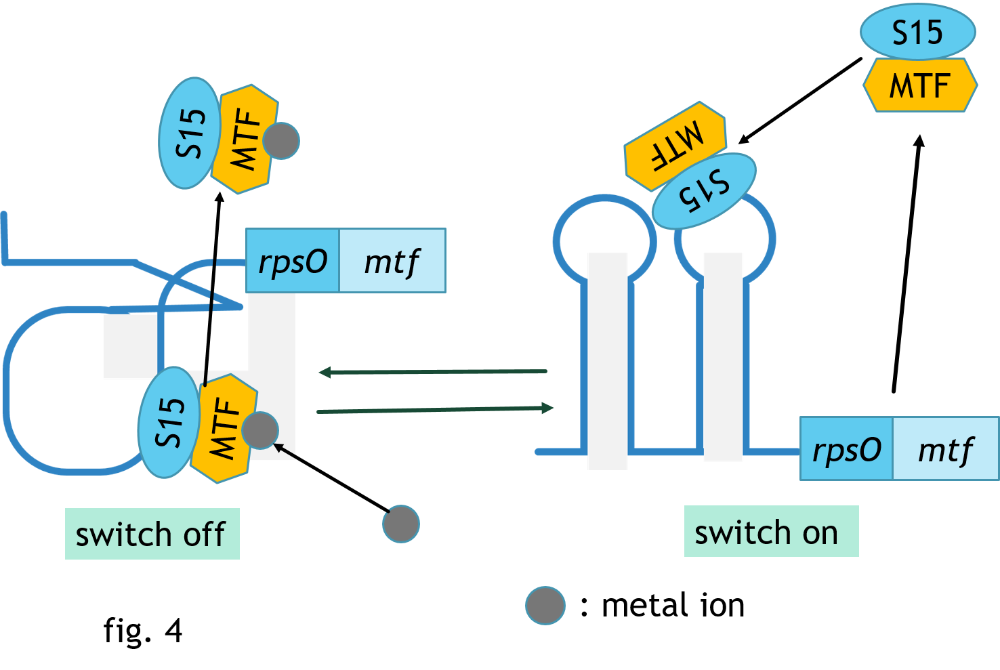

Introduction
We design a cell-like sensor in response to external conditions with self-regulation system.
Self-regulation is relied on the structural changes of RNA sequence, which can form either a stem-loop or a pseudoknot.
Fig. 2 is the schematic diagram of the designed RNA molecular switch system.
When the RNA structure is a stem-loop, the downstream structural genes can be expressed, which means Switch ON.
When the RNA structure is a pseudoknot, the downstream structural genes cannot be expressed, which means Switch OFF.
The structural change between the stem-loop and the pseudoknot is decided by the amount of the downstream gene product S15.
Fig.3 shows the nucleotide sequences and the two dimensional structures of the RNA switch.
Two structural genes, rpsO and mtf, are located downstream of this RNA switch.
The two genes express the proteins of S15 and MTF, respectively.
S15 works as the self-regulator and MTF functions as the sensor responding to the metal ions.
The outline of our designed switch is illustrated in fig 4.
S15 binds the upstream RNA sequence and changes the RNA structure from the stem-loop to the pseudoknot, performing the self-regulatory function.
Once the metal ions are bound with MTF, the S15-MTF fusion will release from the RNA,
and the structural change from pseudoknot to stem-loop occurs.
The gene expression is then switched on.
When the amount of the metal ions deceases to a low level, the fused S15-MTF protein will bind to the RNA sequence again,
and the structure turns from pseudoknot to stem-loop. In consequence, the gene expression is switched off.
This switch is supposed to be composed by the chemicals and worked in vitro.
A gene expression system reconstituted by all purified components (PURE system) was adopted in this study.
Moreover, the reaction (regulatory switch) was designed to work in a compartment as small as a single cell.
Because the phospholipid bilayer is similar to the biological membrane, we adopted a vesicle consisted of phospholipid bilayer as the compartment.
Finally, create a cell-like self-regulated micro sensor.
Using this system to collect heavy metal ions by using phospholipid bilayer membrane structure to contain heavy metal ions.
Reference
[1] Luisi PL, Varela FJ: Self-replicating micells – a chemical version of minimall autopoietic systems. Origins Life Evol Biosphere 1990, 19:633-643
[2]Walde P, Goto A, Monnard P-A, Wessicken M, Luisi PL: Oparin’s reactions revisited: enzymatic synthesis of poly (adenylic acid) in micelles and self-reproducing vesicles. J Am Chem Soc 1994, 116:7541-7544.
[3]Chakrabarti AC, Breaker RR, Joyce GF, Deamer DW: Production of RNA by a polymerase protein encapsulated within phospholipid vesicles. J Mol Evol 1994, 39:555-559.
[4]Yu W, Sato K, Wakabayashi M, Nakatoshi T, Ko-Mitamura EP, Shima Y, Urabe I, Yomo T:Synthesis of functional protein in liposome. J Biosci Bioeng 2001, 92:590-593
[5]Oberholzer T, Arbrizio M, Luisi PL: Polymerase chain reaction in liposomes. Chem Biol 1995, 2:677-682.
[6] Shimizu Y, Inoue A, Tomari Y, Suzuki T, Yokogawa T, Nishikawa K, Ueda T. : Cell-free translation reconstituted with purified components. Nat Biotechnol. 2001 Aug; 19(8):751-5.
[7]再構成無細胞タンパク質合成技術PURESYSTEMとその利用
化学と生物 43(6), 406-409, 2005-09-01
https://www.jstage.jst.go.jp/article/kagakutoseibutsu1962/43/6/43_6_406/_pdf